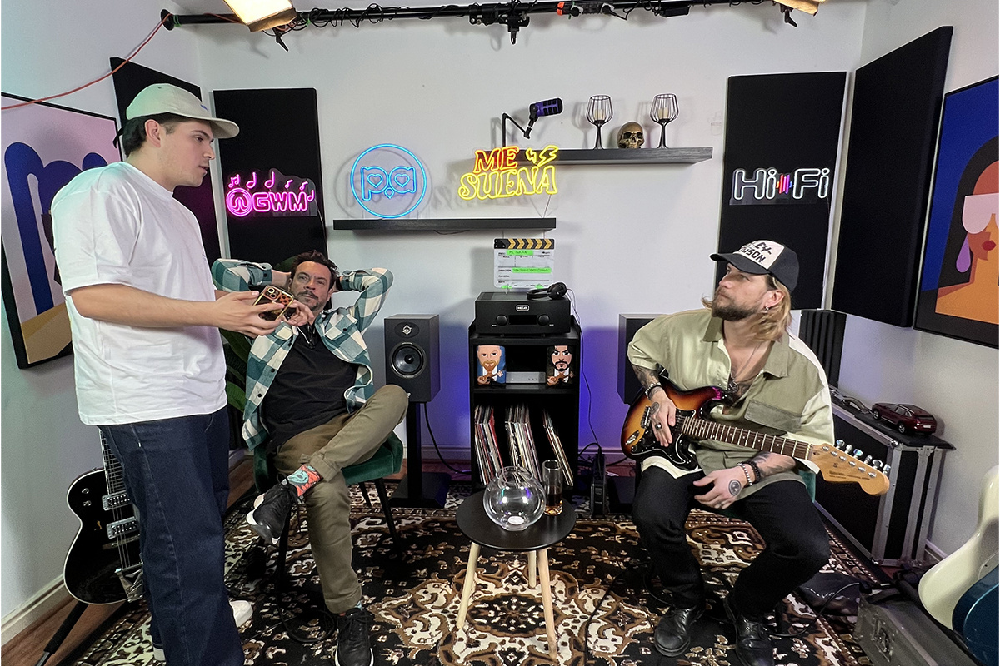
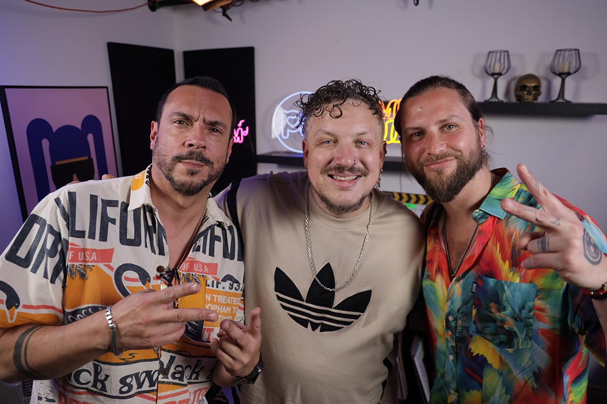
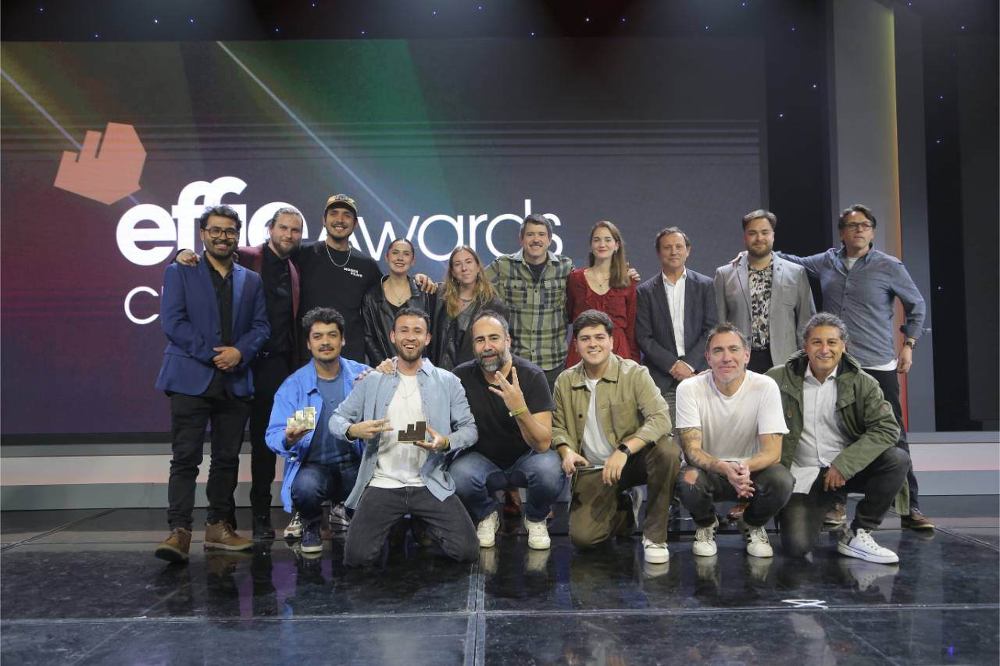

Compara y la música
Un solo corazón
Un solo corazón

Este año para nosotros fue el equivalente a un año perruno (es decir, 7 humanos). Vivimos tantas cosas que sentimos que pasó mucho tiempo. Pero vamos al punto porque hay mucho chismecito.
Les vamos a hablar de nuestro podcast, que ahora se llama Me Suena, si nunca lo oyeron, aquí les dejamos el link. ¿Por qué decimos ahora se llama? Pues tuvo una pequeña transformación a mitad de año, capaz antes lo escucharon con el nombre Wena Compare. Increíbles ambas temporadas.
Si empezamos con lo primero tenemos que pedirle a Javi Arriola que nos cuente ¿¡CÓMO CONOCE A JEAN PHILIPPE CRETTON?!, y si puede ser nuestro novio. No mentira, necesitamos saber como fue el mach entre Compara y JP.

Con Jean nos conocíamos desde que yo trabajaba en Uber (también en Marketing), y tenía su WhatsApp. La verdad es que al ver que estaba ya fuera de TV, tenía que llamarlo para cocrear algo, un podcast tal vez, con libertad creativa de su lado, y que tratara acerca de las comparaciones. Nos juntamos a almorzar, sumando también a Daniel Mosca, productor y dueño de Mosca Films, cabros muy buenos en el mundo audiovisual. Y ahí vimos los 3 que podíamos armar algo épico, diferente, y que no se estaba haciendo, el match fue instantáneo
En la primera etapa cuando todavía se llamaba Wena Compare, era un desfile de comparaciones, hubo episodios donde se hablaba de las teletones chilenas, memes virales, teleseries, música chilena, todo bien cultura pop. Si eres de las personas que vive comprando cosas, esa temporada es para ti.

Luego nos fuimos para el lugar que siempre nos gustó y es la música, donde para comparar y hablar, hay INFINITO. Pero Jean no vino solo, sino con su dupla Mauricio Jürgensen, periodista experto en música (y que ha entrevistado a grandes de grandes). Debemos decir que son un gran equipo, poseen una química inigualable en el podcast. Se miran y ya sabe que está pensando cada uno.
Fue así que Me Suena tuvo su aparición y con este refresh tuvimos a artistas increíbles, como: Mario Mutis, Joe Vasconcellos, Alain Johannes, Javiera Mena, Myriam Hernández, Américo y varios más que pueden descubrir en Spotify.
A lo largo de este año nos acompañaron nuestros amigos Los Mosca Films, son muy bacanes y hemos logrado que las cosas realmente sucedieran (equipazo encargado de toda la hermosa producción). Un ejemplo de eso fue nuestro Effies, si lo compartimos con ellos. Miren esta foto:

Como dijimos arriba, parece que todo esto fue en una unidad de tiempo que no equivale a 365 días, pero de verdad, esto fue solo este año. A su vez, y como dice el refrán, pareciera que no hay nada nuevo bajo el sol, pero sí que lo hay.
¿Qué traerá de nuevo este podcast? ¿Será que hay posibilidad de reinventarse? ¿Spoileamos?
Solo diremos que la música es la pasión que seguiremos comparando, y que la queremos escuchar en vivo, ¡shan!
 Actualidad
ActualidadEl recordado programa noventero “Venga Conmigo” marcó a toda una generación en Chile. Su exitoso segmento “Corazones Service” se transformó…
 Actualidad
ActualidadHace aproximadamente 2 meses comenzamos con el cierre de lo que empezó en julio como el “Compariniverse”.
 Actualidad
ActualidadHace unos meses lanzamos Compariniverse: la primera campaña en Chile protagonizada por una celebridad completamente clonada con IA.